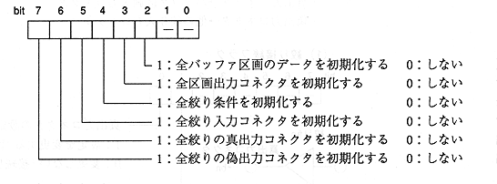

Title | Function | Function Name [SR] | No |
format Sint32 CDC_ResetSelector (Sint32 rflag, Sint32 bufno) Input rflag: Reset flag (lower 8 bits are valid) : bufno: Buffer partition number Output None Function value Returns an error code. End flag ESEL flag Function Initializes the selector setting state according to the reset flag value. : -When reset flag = 0: All data in the specified buffer section is deleted. : -Reset flag ≠ 0: The buffer partition number is ignored.

(2) Initial value
Initialization sets the following initial values for all selectors. -Buffer partition data: All will be erased. (All data in the CD buffer is erased.) -Partition output connector: All are unconnected. -Aperture condition: Same as initialization in aperture mode setting (CDC_SetFiltMode). -Aperture input connector: All are unconnected. -True output connector: The same number of apertures and buffer sections are connected. ・ Fake output connector: All are disconnected.